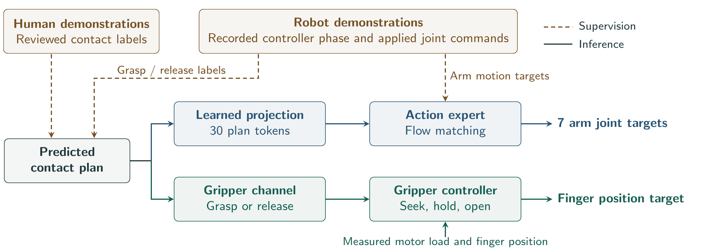
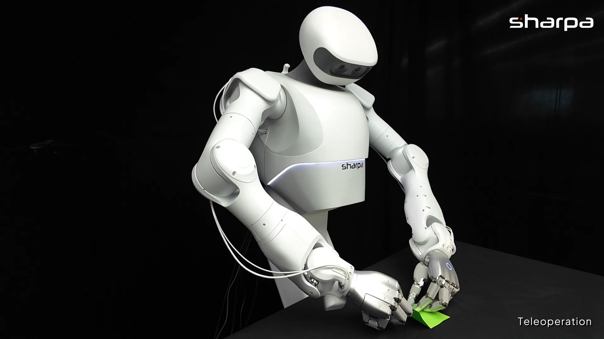
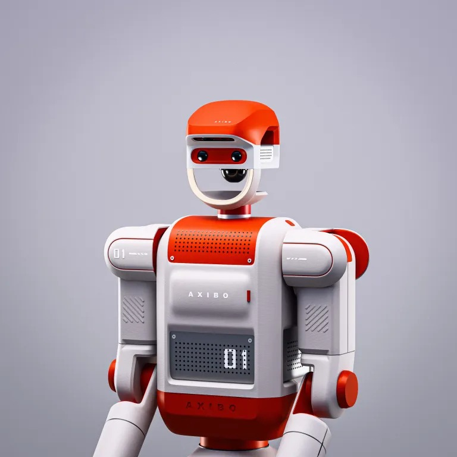
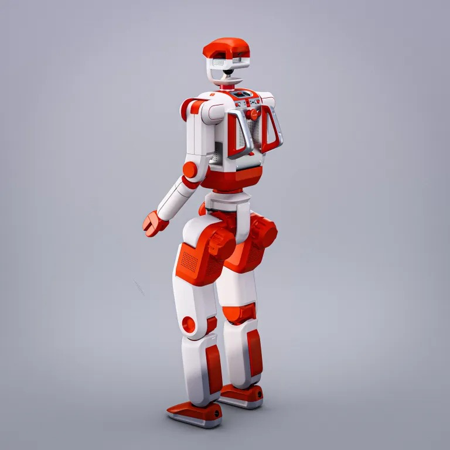
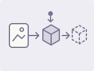
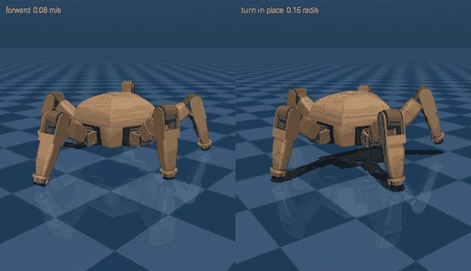
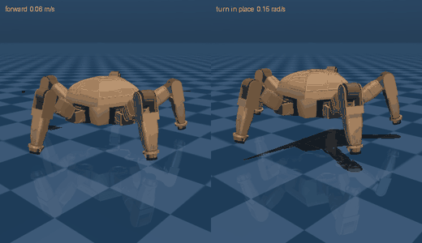
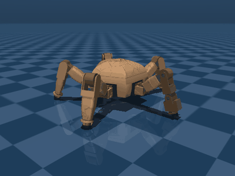

Research in detail.
Long-horizon manipulation, post-training, and learning to act in the physical world.
Mechatronics Engineering + AI at the University of Waterloo, working on foundational models and robot learning for manipulation. Currently a Founding Research Engineer at Preload (YC F26) and an accelerated MASc researcher in robotics at Waterloo under Stephen L. Smith; previously a Research Engineer at AXIBO under Vidyasagar Rajendran.
← Selected workResearch & engineering
Research proposals, deployed manipulation systems, and independent engineering projects. Status and scope are noted with each project.

Learning when to grasp delicate objectsA contact-conditioned policy learns when to grasp while motor feedback determines where the fingers stop.
Learning when to grasp delicate objects with motor feedback
Work in progress · 24 November 2026
Abstract
We train a contact-conditioned π₀.₅ policy to decide when to grasp. A local controller uses motor feedback to determine where the fingers stop. We combine human contact labels with robot demonstrations and examine six recorded fortune-cookie grasps. In a preliminary delicate-object pilot, the contact system completed 23 of 30 attempts and stock π₀.₅ completed 14 of 30. A matched robot-only contact policy is needed to isolate the contribution of human supervision.
Policy and supervision
Starting from π₀.₅ [1], the policy reads the chest image, instruction, seven measured arm angles, finger position and available contact feedback. A prediction head uses these observations to produce a 30-step contact plan.
Each batch pairs 16 human and 16 robot windows. We mask the human action loss. On OpenArm, seek and hold label a grasp request, and open labels release. We fit normalization on 89 robot training episodes, validate on 18, reserve 25 for test and train for 10,000 updates.
Preliminary robot comparison
Operators scored five groups of six attempts per policy using fortune cookies, dried flowers and wafer cones. Stock π₀.₅ uses chest vision, language and proprioception to predict arm motion and a binary gripper request.
| Deployed policy | Successes in each group of 6 | Total |
|---|---|---|
| Mixed contact policy | 5, 3, 5, 5, 5 | 23/30 (76.7%) |
| Stock π₀.₅ baseline | 2, 4, 3, 2, 3 | 14/30 (46.7%) |
Training sources, gripper control and horizon differed (30 steps for contact, 50 for stock). Failure causes were not independently adjudicated. The planned 144-trial evaluation includes a robot-only contact policy with the same controller to isolate human co-training across contact, goal, spatial and two-stage tasks.
Motor feedback during fortune cookie grasps
We selected six teleoperated grasps from the November 17 pick-and-place collection after inspecting chest-camera frames for a visible cookie between the fingers. All used a 16 mm/s seek speed in the finger-joint coordinate. The controller stops advancing its position target on a threshold crossing. A sustained crossing for 150 ms latches contact and enters hold. Releasing the grasp clears the latch.

What the latch measures
Finger position at latch ranged from 12.5 to 20.9 mm. In all six grasps the commanded position stayed fixed through hold, which lasted 2.17–3.80 s. In four grasps the raw torque fell below threshold during hold while the flag stayed high. The latch records the controller's grasp state. These traces provide neither an independent timestamp of first touch nor a calibrated measure of fingertip force or cookie damage.
Trace source. OpenArm pick-place-contact-2026-11-17, /cookie_gripper/state, episodes 0008, 0011, 0016, 0021, 0034 and 0036. Chest frames from /cam_chest/image_raw/compressed.
References
[1] Physical Intelligence (2025). π₀.₅: a Vision-Language-Action Model with Open-World Generalization. arXiv:2504.16054.

Origami-MoHTactile-aware, long-horizon paper folding on a bimanual dexterous platform.
Bimanual Dexterous Origami: the IROS 2026 Robotic Origami Challenge
Proposal
Read Origami-MoH →
For the IROS 2026 Robotic Origami Challenge, I'm developing autonomous paper folding on a 65-DoF bimanual dexterous platform with rich tactile sensing. The approach makes a π0.5 flow policy reactive (multi-horizon action prediction with disagreement-based replanning) and contact-aware (progressive tactile fusion, escalating from proprioceptive concatenation to a force-aware mixture-of-experts action decoder), trained as a single vision-conditioned policy over a fixed six-fold sequence.
To tackle the long-horizon problem, I segment demonstrations over their temporal shape into contact-delimited subgoals, then train the model to predict the next subgoal state from proprioception and tactile alone (no vision). This decomposes the minutes-long fold into short, individually verifiable steps and gives the policy intermediate targets that stay reliable exactly when the crease self-occludes the camera.

JuniorA deployed bimanual policy stack, from demonstration collection to closed-loop control.
A Deployed Bimanual Manipulation Policy Stack: Junior
End-to-end ownership: demo-collection hardware → policy training → closed-loop deployment on Junior's dual arms.

A single fixed action-chunk horizon trades foresight for precision, yet bimanual tasks need both. Camera, inference, and control delays misalign predicted actions with physical execution, and per-chunk inference alone caps effective control frequency on contact-rich tasks. Junior's deployed stack composes four ideas so each addresses a different failure mode: a π0.5 flow-matching backbone, a Mixture of Horizons action head with a learnable gate, inference-time latency matching adapted from UMI, and action interpolation between predicted chunks drawn from the 2025 BEHAVIOR Challenge-winning solution.
Mixture of Horizons resolves the foresight / precision trade-off of a single fixed horizon; latency matching keeps predicted actions temporally aligned with execution; and action interpolation raises the effective control frequency between chunk predictions without extra inference calls. The components compound rather than compete, yielding improved throughput, accuracy, and precision over a single-horizon, latency-naive baseline.
Noise-Space RLSteering a frozen flow policy through its noise inputs, without updating its weights.
Noise-Space RL Fine-Tuning of Flow-Matching Policies
DSRL: Steering Your Diffusion Policy with Latent Space Reinforcement Learning, Wagenmaker et al., CoRL 2025.
Fine-tuning a diffusion or flow policy's weights with RL is unstable and demands full access to model internals, while behavior-cloned policies plateau without costly additional demonstrations. DSRL sidesteps both: instead of updating weights, it trains a small RL agent to select the noise seed that initializes denoising, steering a frozen, black-box base policy toward better behavior.
I applied DSRL-style noise-space RL to our deployed VLA policy's action head, training a lightweight SAC agent (~500K parameters) to pick the seed that steers the frozen base policy. Because RL runs over the latent-noise space, never through the denoiser, so no gradients touch the base weights and no model internals are required. This post-training contributed to a 30% manipulation-performance gain over imitation baselines, adapting a frozen policy without modifying its weights or collecting extra demonstrations.

Latent World-Action ModelsPredicting action-conditioned latent futures to support robot manipulation.
Latent World-Action Models (VLA-JEPA)
VLA-JEPA: Enhancing Vision-Language-Action Models with a Latent World Model, Sun et al., 2026.
Standard VLA policies map observations directly to actions without modeling how the scene will evolve, and pixel-space prediction is brittle to appearance and camera changes. Following VLA-JEPA, I built action-conditioned latent world-action models that predict future latent states rather than pixels, a leakage-free formulation in which future frames are only ever targets, never inputs.
The model encodes the current observation plus action context into a latent representation and predicts 10-step, action-conditioned latent dynamics with no pixel reconstruction. A two-stage recipe (JEPA-style pretraining followed by action-head fine-tuning) integrates the predicted latent rollouts with downstream VLA action heads. I evaluated rollout consistency across manipulation trajectories to assess temporal coherence of the learned dynamics.

RockyA five-legged walking robot with an analytic wave gait and a learned locomotion policy.
Rocky: a five-legged walking robot
Rocky is a pentapod I designed and trained end to end: a 250 mm pentagonal body carrying five identical 342 mm limbs at 72° spacing, one of which doubles as a manipulator. The repo takes it from a Fusion 360 CAD master to a simulation model (MJCF / URDF), an analytic wave gait, and a PPO locomotion policy in MuJoCo (mjlab). Sixteen Feetech STS3215 joints, 4.17 kg all-up.


Open loop, the wave gait reaches only ~78% of commanded speed; the shortfall is servo deflection, not the gait, which is the clearest argument in the repo for closing the loop. The RL task carries the gait over with a gait-phase clock in the observation, a contact-schedule reward, and an imitation reward that constrains foot placement. That third term was decisive: contact scheduling alone constrains when a foot is down but never where it lands, so the policy learned to step in place; adding the imitation term fixed it in one run.